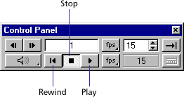

Using Director > Director 8 Tutorial > View the completed DIR version of GardenChat
Using Director > Director 8 Tutorial > View the completed DIR version of GardenChat |
View the completed DIR version of GardenChat
When you work on a Director movie, you use the authoring environment. Director movies saved in this environment have the .dir file extension. (These movies are not yet prepared for distribution.) Now view the completed DIR version of the tutorial movie to understand how the assets work together on the Stage and in the Score to create the movie.
Note: The DIR version of the completed tutorial movie does not include the chat component.
1 |
Launch Director and then choose File > Open. |
2 |
Browse to your Director application folder, open the Learning folder and the Completed Tutorials folder, and then open Fun.dir. |
3 |
To play the movie, click Play on the Control Panel or the toolbar along the top of the screen.
 |
If the Control Panel and toolbar are not visible, you can select them from the Window menu. |
|
4 |
After viewing the movie, click Stop and look at the Stage, Score, Cast window, and Property Inspector to get a sense of how the Director application and movie are organized. |
If the Stage, Score, Cast window, and Property Inspector are not visible, you can select them from the Window menu. |
|